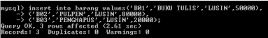
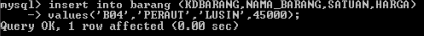
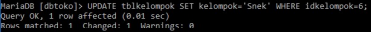
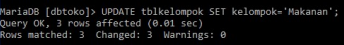
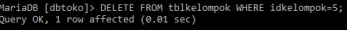

DML (Data Manipulation Language) adalah kelompok perintah sql yang digunakan untuk memanipulasi data, misalnya untuk pengambilan, penyisipan pengubahan dan penghapusan data.
Tujuan perubahan tersebut adalah untuk mendapatkan data yang sesuai dengan lebutuhan pemakai (user).
Perintah sql yang termasuk dalam kelompok DML antara lain :
Memasukkan data atau menambah data pada mysql menggunakan perintah insert. Ada beberapa cara untuk menambah data yakni menambah data semua field atau menambah data pada field tertentu.
Bentuk umum perintah SQL untuk menambahkan record atau data ke dalam suatu tabel adalah sebagai berikut :
Insert into nama_tabel values (‘nilai1’,’nilai2’,…);
Contoh perintah untuk menambah data siswa pada tabel siswa sebagai berikut :
Insert into siswa values (‘Budi’,’11’,’RPL’);

Jika ingin menambahkan data pada field tertentu dapat menggunakan perintah sql sebagai berikut :
INSERT INTO nama_tabel (field1,field2) VALUES (‘nilai1’,’nilai2’);
Contoh perintah untuk menambah data nama siswa pada tabel siswa sebagai berikut :
Insert into siswa (nama_siswa) values (‘Budi’);

Mengubah atau mengedit data pada mysql menggunakan perintah update. Jika terdapat kesalahan pada data dapat menggunakan perintah update untuk memperbaikinya.
Proses update ini tidak menambahkan data (record) baru, tetapi memperbaiki data yang lama.
Perubahan yang terjadi dalam proses update bersifat permanen, artinya setelah perintah dijalankan tidak dapat di-cancel (undo).
Bentuk umum perintah SQL untuk mengedit suatu record atau data dari suatu tabel adalah sebagai berikut :
UPDATE nama_tabel SET field1=’nilai1’, field2=’nilai2’ where ;
Note : jika where tidak ditambahkan pada perintah update maka semua record dalam tabel bersangkutan akan berubah
Contoh perintah untuk mengubah data kelompok jajan menjadi snek :
 hasilnya
Contoh perintah untuk mengubah semua data kelompok menjadi makanan :

Menghapus data adalah menghilangkan satu atau beberapa record data dari suatu tabel. Perintah yang digunakan untuk menghapus adalah Delete.
Proses delete dilakukan jika terdapat data atau record dalam suatu tabel yang perlu dihapus atau dihilangkan. Perubahan yang terjadi dalam proses delete bersifat permanen, artinya setelah perintah dijalankan tidak dapat di-cancel (undo).
Bentuk umum perintah SQL untuk menghapus suatu record atau data dari suatu tabel adalah sebagai berikut
DELETE FROM nama_tabel where ;
Note : jika where tidak ditambahkan pada perintah delete maka semua record dalam tabel bersangkutan
Contoh perintah untuk menghapus data kelompok yang memiliki ber-id 5 :
 hasilnya
Menambah field dapat diartikan sebagai langkah untuk menyisipkan field baru pada sebuah tabel. Untuk melakukan penambahan field maka alter option yang digunakan adalah ADD. Perintah yang digunakan untuk menambah field pada tabel adalah
Alter table nama_tabel add nama_field tipe data (size);
Contoh perintah untuk menambah field pada tabel :
Alter table film add jenis_film varchar (25);
Pada pembuatan database pasti terdapat kesalahan seperti pada field tabel yang berlebihan dan lain-lain. Untuk melakukan penghapusan field maka alter option yang digunakan adalah DROP. Perintah yang digunakan untuk menghapus field pada tabel adalah
Alter table nama_tabel drop nama_field;
Contoh perintah untuk menghapus field pada tabel :
Alter table film drop jenis_film ;
Jika terdapat kesalahan penulisan field dapat dirubah dengan menggunakan menggunakan alter option CHANGE. Perintah yang digunakan untuk mengganti nama field pada tabel adalah
Alter table nama_tabel change field_lama field_baru tipe data;
Contoh perintah untuk mengganti field pada tabel :
Alter table film change judul judul_film varchar (25);
Jika terdapat kesalahan tipe data pada field dapat dirubah dengan menggunakan alter option MODIFY. Perintah yang digunakan untuk mengganti tipe data field pada tabel adalah
Alter table nama_tabel modify nama_field tipe data;
Contoh perintah untuk mengganti field pada tabel :
Alter table film modify judul_film varchar (25);
Untuk mengubah nama tabel dapat menggunakan alter option RENAME. Perintah yang digunakan untuk mengubah nama tabel adalah
Alter table tabel_lama rename to tabel_baru; atau rename table tabel_lama to tabel_baru;
Contoh perintah untuk mengganti field pada tabel :
Alter table filem rename to film;
Rename table filem to film;
Jika ingin menambah primary key pada suatu tabel dapat menggunakan alter dengan option ADD PRIMARY KEY. Perintah yang digunakan untuk menambahkan primary key adalah
Alter table nama_tabel add primary key (nama_field);
Contoh perintah untuk menambahkan primary key pada tabel :
Alter table film add primary key (id_film);
Jika ingin menghapus primary key pada suatu tabel dapat menggunakan alter dengan option DROP PRIMARY KEY. Perintah yang digunakan untuk menghapus primary key adalah
Alter table nama_tabel drop primary key;
Contoh perintah untuk menambahkan primary key pada tabel :
Alter table film drop primary key;